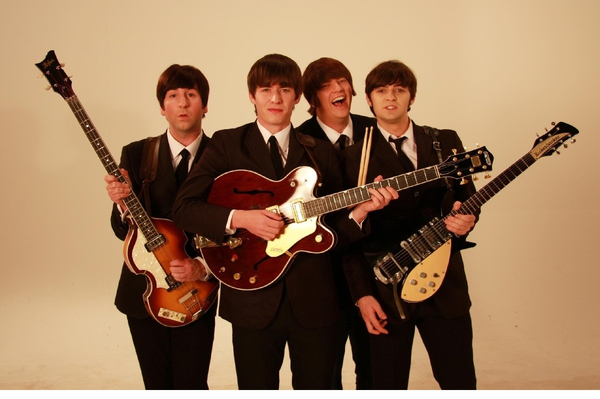
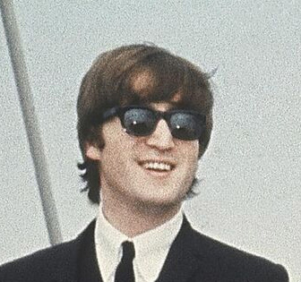
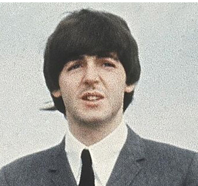
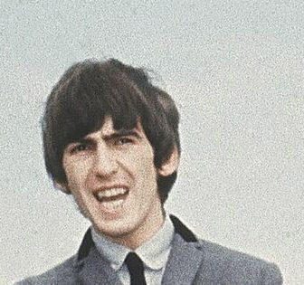
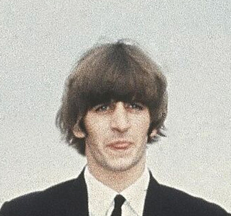
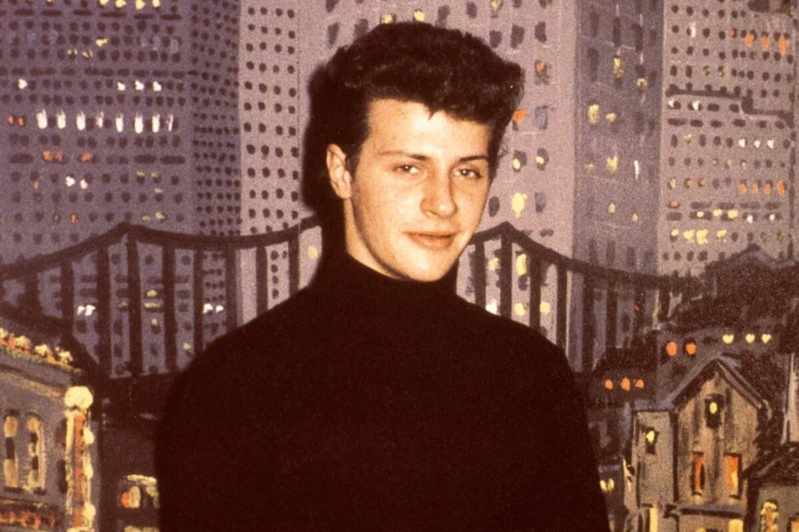
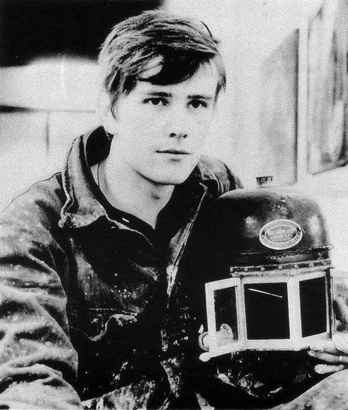
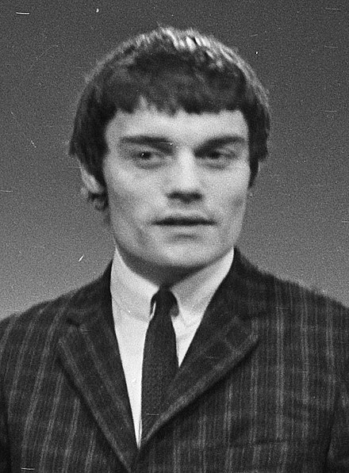
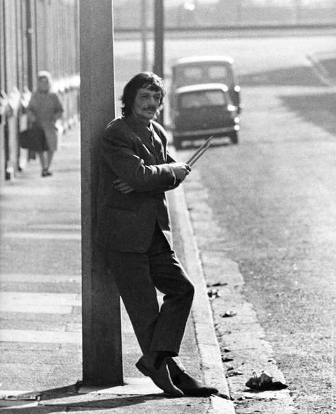

|  |
Название:"The Beatles" ("Битлэ"; отдельно участников ансамбля называт "битлами)
Страна:Великобритания (г.Ливерпуль)
годы:1960-1970
Состав группы:(те, кого весь мир знает как The Beatles):
- Джон Ленон (ритм-гитара, соло-гитара, бубен, клавишные, бас-гитара, губная гормовка, вокал)

- Пол Макартни (ритм-гитара, ударение , гитара, вокал,бас-гитара)

- Джордж Харрион (соло-гитара, ритм-гитара, ситар, бубен, бонги,клавишные)

- Ринго Стар (ударение, ритм-гитара, бубен, маракасы, бонги, клавишные)

Также в разное время в составе группы выступали:
- Пит Бест (ударение, вокал)

- Стюарт Станклиф (бас-гитара, вокал)

- Джордж Никол (ударные)

- Томми Мур (ударные)

После распада группы, произошедщего в 1970 году, каждый из её участников начал сольную карьеру.
© Все права защищены.
|